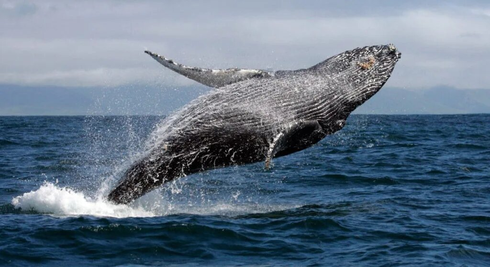

La ballena azul (Balaenoptera musculus), también conocida como rorcual azul, es una especie de cetáceo misticeto de la familia Balaenopteridae. Su tamaño medio es de entre 24 y 27 metros de longitud y pesan entre 100 y 120 toneladas,2 aunque hay registros de ejemplares de más de 30 m de longitud y 170 t de peso,3 que lo convierten en el mayor animal del planeta Tierra, no solo en la actualidad sino también el mayor del que se tenga registro en la historia de la vida en la Tierra.
Ballenas 4K